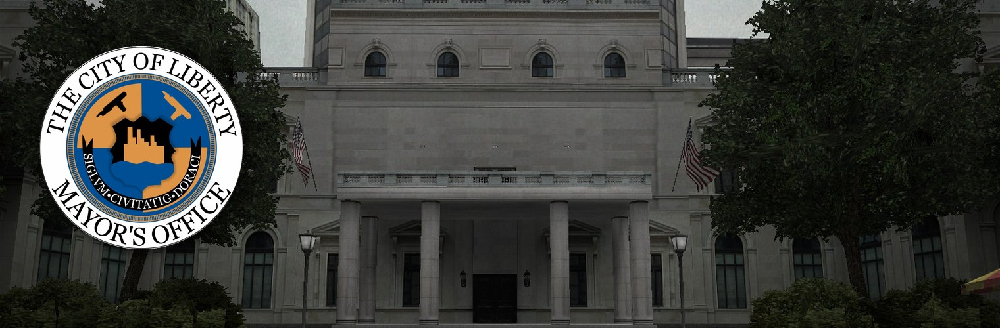
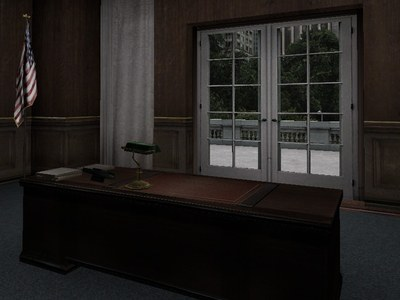
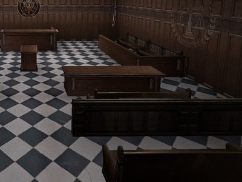

Правосудие слепо; мы нет.
Ваше текущее местоположение: Брокер, Либерти-Сити.
Мэрия города находится в Алгонквине.

Департамент Закона Либерти-Сити постоянно ищет сотрудников! Наша бюрократия гарантирует вечную нужду в юристах и вечную актуальность Адвокатской Палаты. Решайте свои проблемы и создавайте чужие под звук падающей на стол папки!

Сейчас идёт отбор на позицию правового советника. Для работы нужны:
Заявление подаётся в ближайшем офисе LC GOV, здании суда или мэрии. Частному юристу нужны те же документы плюс лицензия на бизнес.
*В Палату можно вступить, сдав индивидуальный экзамен перед уполномоченными лицами.